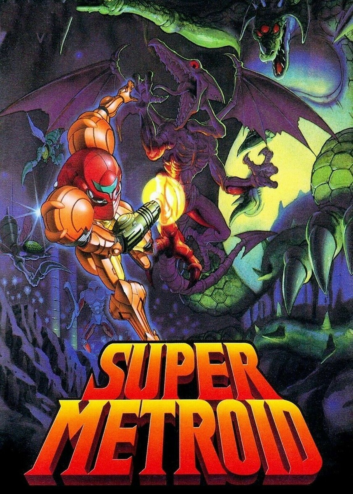
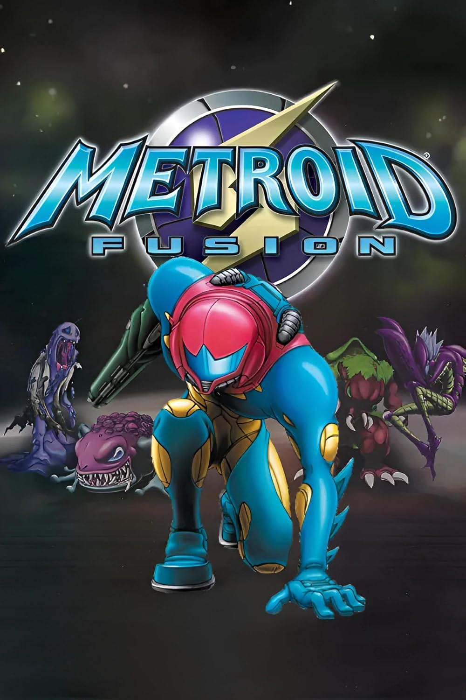
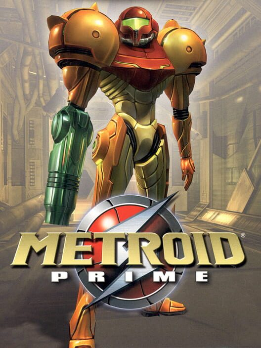
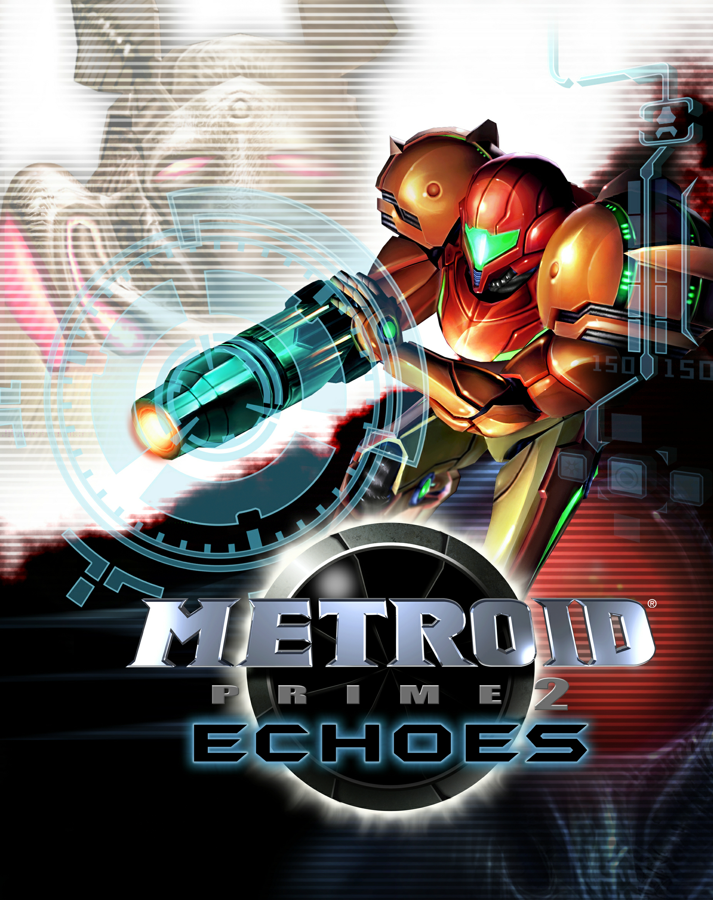
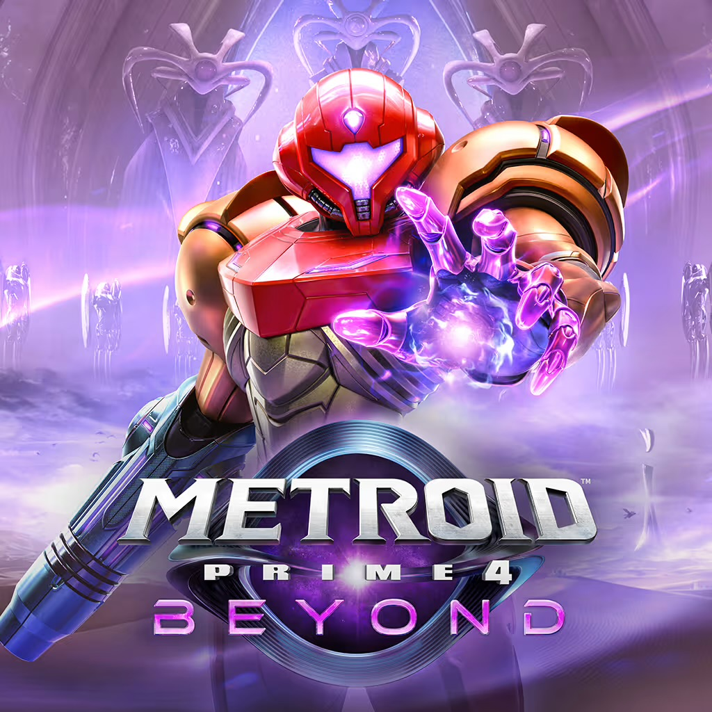

The very first Metroid game. Samus Aran goes to the planet, Zebes, to defeat the space pirates who are using the metroids for their own nefarious purposes. This leads her
to the all powered AI, Mother Brain, whose mission was to use the space pirates and the metroids in order to take over the galaxy. After defeating Mother Brain, she escapes the planet as it self-destructs.
In the remake, Metroid: Zero Mission, while attempting to escape the planet, she is ambushed by space pirates, and is forced to survive without her suit. After struggling in a weakened state, she regains her powersuit, and manages to escape.
Samus makes her grand return with one mission: eliminate all the Metroids. Going to their home planet, SR388, she eliminates every Metroid in her path, seeing the different, more grotesque Metroid evolutions.
It all leads to a final battle against the Queen Metroid, putting a definitive end to the metroid threat (kind of).
After defeating the Queen, she encounters a newly hatched baby Metroid. That Metroid sees Samus as its mother, and quickly attaches itself to her. In the remake, Ridley tries to steal the baby, but is thwarted by the bounty hunter. The baby Metroid is then handed over to the Galactic Federation for research...

Super Metroid (1994)
After getting a distress signal from the Galactic Federation, Samus finds herself in the Space Science Academy. Ridley appears, and steals the baby metroid, hoping to clone the species and use them as bioweapons. After the research station explodes, Samus follows Ridley to a rebuilt Zebes,
and fights her way through through the Space Pirates. It all leads to another confrontation with the vicious Mother Brain, now even stronger than before. Right as when hope is almost lost for Samus after a killing blow from Mother Brain, the baby Metroid uses the last of its power to help Samus, making her invincible and extremely powerful. With that, Mother Brain is defeated,
and the metroid threat was subdued once more.

Metroid Fusion (2002)
While helping researchers studying SR388, Samus is infected by an X-Parasite, the horrific prey of the Metroids, who now plague the planet with the elimination of the Metroids. This causes her
to be hospitalized, with surgeons needing to remove her power suit, and give her a vaccine made from the baby Metroid. She is then sent to investigate the Galactic Federation's research center, as Samus' infected power suit started to mimic the hunter, and terrorize the researchers.
Dubbed the SA-X, she ventures through the research center, stalked by the SA-X. Now invicible to the X parasites due to the Metroid DNA inside her, she explores the lab, fighting multiple creatures, and finding a secret lab of Metroids, all guided by an AI version of her former mentor, Adam Malkovich. After the SA-X asexually reproduces and creates multiple versions of itself,
Samus and Adam decide to crash the research center into SR388, destroying the X on the station and the planet.
Metroid Dread (2021)
The Galactic Federation is sent a strange video showing an X parasite in the wild, after it was thought that the species had been decimated. They decide to send specialized robots, called EMMI, to the source of video, planet ZDR. When the signal to the EMMI was disconnected, they called the only person immune to the parasites, Samus Aran, to investigate further.
Her mission was to recover the EMMI, and eliminate the X parasites, however, things take a dark turn when a mysterious Chozo named Raven Beak catches her off guard, and all of a sudden, she wakes up in the depths of ZDR completely powerless. She quickly finds out that the EMMI had been reprogrammed to kill her, but with their special armor, are impossible to kill normally. She continues to explore the depths of ZDR, and finds out the EMMI want to extract her DNA, the X parasites are still alive, and that she has some of Raven Beak's DNA inside her.
In the final confrontation against Raven Beak, she finds out about his nefarious plan to take over the galaxy, which leads to Samus unleashing her dormant Metroid DNA. She uses her newfoun power to obliterate Raven Beak, and escapes the planet as it explodes.
Prime Series:

Metroid Prime (2002) / Metroid Prime Remastered (2023)
Samus gets a distress signal from a space pirate ship, and decides to investigate. She finds that the space pirates were killed after they experimented with a substance called Phazon. After Meta Ridley attacks her, she is forced to retreat to the planet Tallon IV, which turns out to be more strange than she first thought.
After landing, she finds out that the planet was once home to the Chozo race, alien birds who became completely extinct. She explores Tallon IV, slowly uncovering the many mysteries of the planet, and collecting artifacts which unsealed the impact crator, the which held the creature known as the Metroid Prime, who was the source of the Phazon on the planet. Upon its defeat, the Metroid Prime steals Samus' Phazon suit,
absorbing it in a sea of Phazon. The crater collapses, and Samus leaves Tallon IV.

Metroid Prime 2: Echoes (2004)
Samus is sent to planet Aether after communication was lost with a Galactic Federation ship that was sent there. Upon arriving, she finds out the ship was wiped out by the Ing, an interdimensional alien race. Afterwards, she meets with a member of a different alien race called the Luminoth, who explains how the planet had been split into two dimensions: Light and Dark.
Samus decides to help the Luminoth restore the planet to how it was before, exploring both dimesions while being stalked by the Phazon suit remnant known as Dark Samus. After restoring the Light of Aether, the dark dimension, and the ing, are eradicated, leaving the Luminoth in peace.
Metroid Prime 3: Corruption (2007)
Samus and three other Bounty Hunters, Rundas, Gandrayda, and Ghor, are called by the Galactic Federation to restore supercomputers called the Aurora Units. As they work togeher to fix these units, they are forced to go to the planet Norion because of a sudden attack by the Space Pirates. In this attack, the pirates try to corrupt the planet with Phazon by using a Leviathan,
a create that spreads phazon. Just as the hunters had defeated the pirates, Dark Samus appears puts all of them in a coma.
Sometime later, Samus wakes up in a new suit which is designed to utilize phazon as a weapon. Her mission is now to find all the missing bounty hunters, and eliminate all the Leviathans. Through her mission, the phazon slowly corrupts her body more and more, meanwhile she is forced to kill the other bounty hunters who are
completely corrupted by phazon. She is then lead to the planet Phaaze, the origin of all Phazon. After a final confrontation with Dark Samus, Phaaze explodes, destroying all the phazon left in the universe.

Metroid Prime 4: Beyond (2025)
When Space Pirates suddenly attack the Galactic Federation, they call Samus for help. As she arrives, an all out war ensues, and she comes to find out it was all orchestrated by
the mysertious bounty hunter, Sylux. Aside from his grudge against the Federation, not much is known about him. As he goes against Samus, he tries going for an ancient artifact in the Federation's possession, but in doing so,
him, Samus, and a few Federation troopers suddenly get transported to the planet Viewros. Samus finds herself with strange pyschic powers given to her by an ancient race of aliens. She must escape Viewros, and stop Sylux from whatever sinister things he is planning.